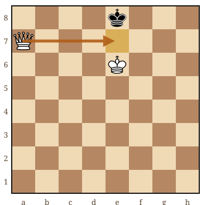
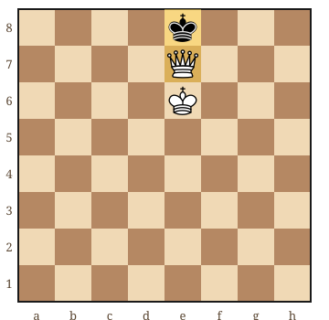
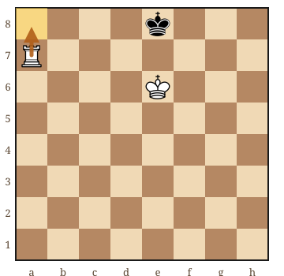
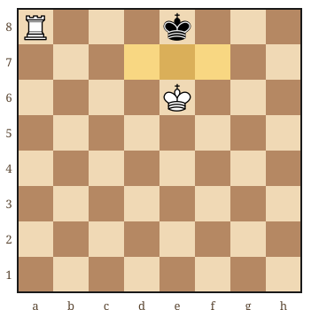
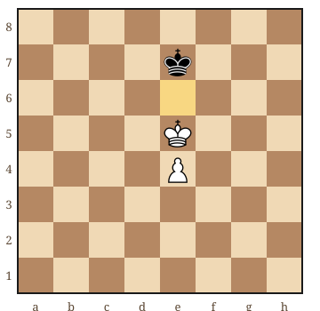
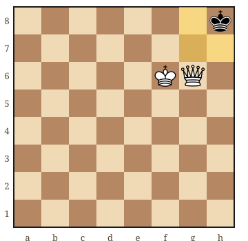

Pour commencer les finales d'échecs, apprenez à mater avec roi et dame, à mater avec roi et tour, puis à accompagner un pion vers sa promotion. Le PDF gratuit proposé ici explique ces trois bases dans le chapitre 9 du guide de Nicolas Musicki.
Vous cherchiez Les 100 finales qu'il faut connaître en PDF gratuit ? Il s'agit d'un ouvrage de Jesús de la Villa García, publié chez Olibris. Cette page ne le distribue pas : elle propose un autre guide, écrit pour les débutants et offert par son auteur. Pour l'ouvrage de Jesús de la Villa, consultez la présentation et les extraits de l'éditeur.
En finale, votre roi participe au travail
On parle de finale lorsque le matériel s'est suffisamment réduit pour que l'activité des rois et la promotion des pions deviennent centrales. Il n'existe pas un nombre fixe de pièces qui marque ce passage.
Votre roi peut alors aider à limiter les déplacements du roi adverse. Il reste soumis à la même règle : il ne peut jamais entrer sur une case attaquée. Deux rois ne peuvent donc pas se retrouver côte à côte. Si ce repère est encore flou, revoyez les règles de l'échec, du mat et du pat.
Dans mes cours, je conseille de chercher d'abord la position finale souhaitée. Une fois que vous savez à quoi ressemble le mat, les coups préparatoires ont un but : rapprocher votre roi, réduire l'espace adverse et garder votre pièce en sécurité.
Roi et dame contre roi : réduire l'espace, puis mater
La dame contrôle des lignes et des diagonales. Utilisez-la pour couper une partie de l'échiquier au roi adverse, puis rapprochez votre propre roi. Ne multipliez pas les échecs sans plan : un roi qui s'échappe au centre vous oblige à recommencer.
- Formez une barrière. Réduisez progressivement le rectangle dans lequel le roi adverse peut circuler, sans offrir votre dame.
- Amenez votre roi. Lorsqu'il est proche, il contrôle les cases de fuite ou protège la dame au moment du mat.
- Vérifiez et concluez. Le roi adverse doit être attaqué et ne disposer d'aucune défense légale.


Dans ce schéma, la dame contrôle d8 et f8 en diagonale, d7 et f7 sur sa rangée. Le roi e6 protège e7. Le signe « # » indique le mat ; « D » désigne la dame. Vous pouvez donc vérifier le résultat case par case, sans vous fier à l'impression que le roi est coincé.
Roi et tour contre roi : les deux pièces coopèrent
Une tour ne contrôle pas les diagonales. Elle peut couper une rangée ou une colonne, mais votre roi doit prendre en charge les cases qui restent accessibles. C'est la différence essentielle avec la dame.
Commencez par barrer le passage vers le centre avec votre tour. Rapprochez le roi blanc, puis repoussez le roi noir lorsque les deux pièces peuvent agir ensemble. Si le roi adverse s'approche de la tour, éloignez-la sur sa ligne plutôt que de la laisser prendre. Un coup d'attente peut être utile ; chaque coup n'a pas besoin de donner échec.


Retenez cette image avant d'essayer de pousser un roi depuis le milieu du plateau. Sans le roi blanc en soutien, ce même échec de tour ne suffirait pas forcément. Pour éviter de perdre le bénéfice d'une bonne partie, complétez ce travail avec les erreurs courantes des débutants.
Roi et pion contre roi : à qui est-ce de jouer ?
Avec un pion supplémentaire, le but est généralement de le promouvoir. Mais un pion ne gagne pas tout seul : son roi doit souvent lui ouvrir le chemin. Avant de pousser, regardez la position des deux rois.
Dans l'opposition directe, les rois se font face avec une case entre eux. Celui qui n'a pas à jouer conserve cette opposition : l'autre doit quitter sa case. Cela peut permettre de contourner le roi défenseur.

Ici, après un déplacement du roi noir de e7 à d7, le roi blanc peut entrer en f6. Si les Noirs choisissent f7, les Blancs entrent en d6. Un recul noir vers la huitième rangée permet aussi au roi blanc d'atteindre la sixième. Il gagne ainsi une case clé devant son pion.
Cette position est gagnante pour les Blancs si les Noirs jouent, mais nulle avec une défense correcte si les Blancs jouent. L'opposition ne suffit toutefois pas à résoudre toutes les finales de pions. La colonne du pion, sa hauteur et les possibilités de gagner un temps changent le résultat. Ne transformez pas ce schéma en règle universelle.
Le piège du pat : bloquer n'est pas mater
Quand l'adversaire n'a plus que son roi, posez-vous deux questions avant votre coup : sera-t-il en échec ? Sinon, lui restera-t-il un déplacement légal ? Un roi qui ne peut plus bouger sans être attaqué n'est pas battu s'il n'est pas déjà en échec.

La dame g6 contrôle g7, g8 et h7, mais pas h8. Il n'y a aucune autre pièce noire à déplacer. C'est donc bien un pat, pas un mat. La distinction figure dans les règles officielles de la FIDE, articles 5.1.1 et 5.2.1.
Un entraînement simple avec le guide PDF
Reconstituez d'abord les deux positions juste avant le mat. Trouvez le coup, puis nommez les cases contrôlées. Recommencez avec les couleurs inversées. Ensuite, éloignez le roi adverse du bord et entraînez-vous à retrouver la même coopération. Notre article sur le temps nécessaire pour progresser aux échecs vous aide à organiser cette pratique.
Le chapitre 9 du PDF reprend ces finales dans le parcours complet, avec des exercices corrigés. Il ne s'agit pas d'un recueil de cent finales ni d'un substitut au livre de Jesús de la Villa. Pour débuter, mieux vaut savoir expliquer un mat simple que reconnaître vaguement beaucoup de positions.
Si vous apprenez encore à jouer, repartez de notre guide de départ pour le débutant absolu. Si vous jouez déjà des parties, testez votre calcul avec les exercices d'échecs pour débutants, puis intégrez ces positions au programme de progression de zéro à 500 Elo.
Une finale vous échappe dans vos parties ?
Nous pouvons reprendre la position ensemble et construire une méthode pour la jouer. Je propose un premier cours offert à Paris, à Versailles ou en visio.
Réserver mon cours offertPour continuer votre apprentissage
Échec, mat, pat : revoir les règlesVérifiez les coups autorisés et les différentes fins de partie. → Les erreurs de débutant à éviterPrenez le temps de contrôler les menaces et les échanges. → Intégrer les finales à votre progressionReplacez ces positions dans un entraînement de débutant. → Article rédigé par Nicolas Musicki, professeur d'échecs à Paris et Versailles
Retour à l'accueil | Me contacter
Questions fréquentes
Quelles finales apprendre en premier aux échecs ?
Commencez par le mat roi et dame contre roi, puis le mat roi et tour contre roi. Étudiez ensuite l’opposition avec roi et pion contre roi, en vérifiant toujours à qui est le tour.
Peut-on mater avec seulement une tour et un roi ?
Oui, contre un roi seul, le roi et la tour peuvent forcer le mat si la tour ne peut pas être capturée immédiatement. La tour ferme une ligne et le roi contrôle les cases de fuite. Il faut faire coopérer les deux pièces.
Quelle est la différence entre le pat et le mat ?
Dans les deux cas, le joueur au trait n’a aucun coup légal. Si son roi est attaqué, c’est mat et il perd. Si son roi n’est pas attaqué, c’est pat et la partie est nulle.
Le PDF proposé est-il Les 100 finales qu’il faut connaître ?
Non. Cet ouvrage est de Jesús de la Villa García. Le PDF offert ici est « Apprendre les Échecs, Volume 1 », écrit par Nicolas Musicki. Son chapitre 9 présente les finales de base ; vous pouvez le recevoir depuis le formulaire du guide gratuit.